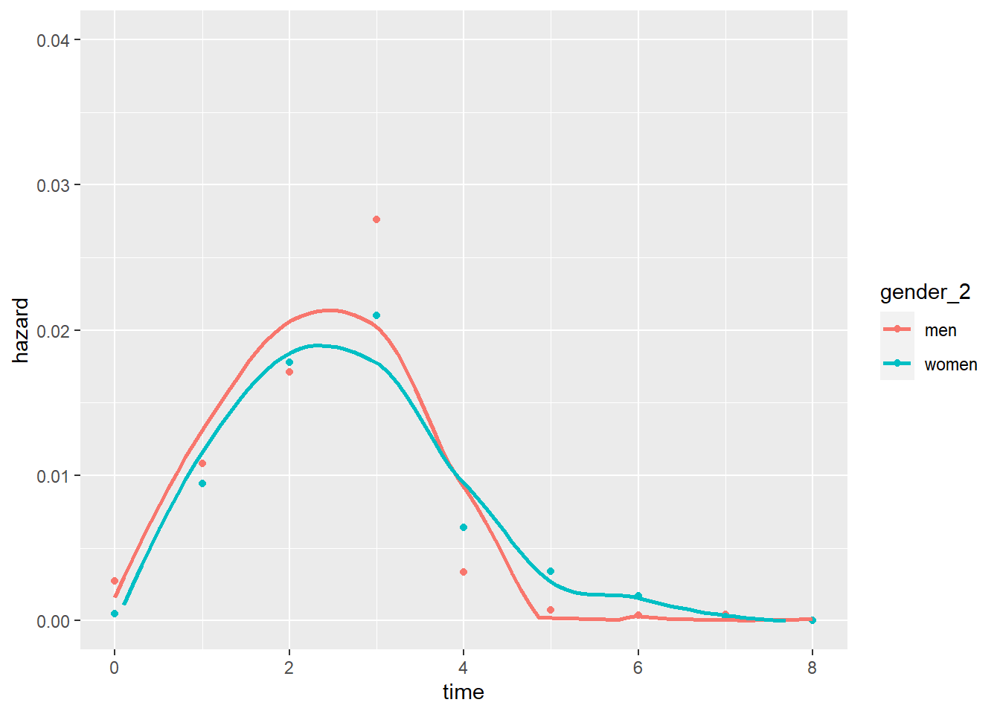

This lab journal demonstrates how we execute the main analyses discussed in the results section.
package.check: Check if packages are installed (and
install if not) in R (source).rm(list=ls())
fpackage.check <- function(packages) {
lapply(packages, FUN = function(x) {
if (!require(x, character.only = TRUE)) {
install.packages(x, dependencies = TRUE)
library(x, character.only = TRUE)
}
})
}
fsave <- function(x, file, location="./data/processed/") {
datename <- substr(gsub("[:-]", "", Sys.time()), 1,8)
totalname <- paste(location, datename, file, sep="")
save(x, file = totalname)
}tidyverse: For general data manipulation
boot: To create bootstrapped standard errors,
following the procedure delineated here
packages = c("tidyverse", "boot")
fpackage.check(packages)## Loading required package: tidyverse## ── Attaching core tidyverse packages ───────────────────
## ✔ dplyr 1.1.4 ✔ readr 2.1.4
## ✔ forcats 1.0.0 ✔ stringr 1.5.1
## ✔ ggplot2 3.4.4 ✔ tibble 3.2.1
## ✔ lubridate 1.9.3 ✔ tidyr 1.3.0
## ✔ purrr 1.0.2
## ── Conflicts ────────────────── tidyverse_conflicts() ──
## ✖ purrr::%||%() masks base::%||%()
## ✖ dplyr::filter() masks stats::filter()
## ✖ dplyr::lag() masks stats::lag()
## ℹ Use the conflicted package (<http://conflicted.r-lib.org/>) to force all conflicts to become errors
## Loading required package: bootWe use one processed dataset
veni_ppfload(file = "data/processed/veni_ppf.rda")summary(veni_ppf$gender_2, useNA="always")## men women
## 55472 44979veni_ppf %>%
filter(year>2002) %>%
group_by(time, gender_2) %>%
summarise(event = sum(veni),
total = n()) %>%
mutate(hazard = event/total) %>%
ggplot(aes(x=time, y = log(-log(1-hazard)), group = gender_2, color=gender_2)) +
geom_point() +
geom_smooth()## `summarise()` has grouped output by 'time'. You can
## override using the `.groups` argument.
## `geom_smooth()` using method = 'loess' and formula = 'y
## ~ x'## Warning: Removed 2 rows containing non-finite values
## (`stat_smooth()`).veni_ppf %>%
filter(year>2002) %>%
group_by(time, gender_2) %>%
summarise(event = sum(veni),
total = n()) %>%
mutate(hazard = event/total) %>%
ggplot(aes(x=time, y = hazard, group = gender_2, color=gender_2)) +
geom_point() +
geom_smooth(se=FALSE) +
scale_y_continuous(limits=c(0, 0.04))## `summarise()` has grouped output by 'time'. You can
## override using the `.groups` argument.
## `geom_smooth()` using method = 'loess' and formula = 'y
## ~ x'## Warning: Removed 12 rows containing missing values
## (`geom_smooth()`).
#veni_ppf[veni_ppf$uni!="WUR",] -> veni_ppf
#veni_ppf[veni_ppf$uni!="EUR",]-> veni_ppf
M1 <- glm(formula = veni ~ as.factor(extended) + as.factor(gender_2) + phd_year,
family = binomial(link="cloglog"),
data = veni_ppf)
summary(M1)##
## Call:
## glm(formula = veni ~ as.factor(extended) + as.factor(gender_2) +
## phd_year, family = binomial(link = "cloglog"), data = veni_ppf)
##
## Coefficients:
## Estimate Std. Error z value Pr(>|z|)
## (Intercept) -4.103299 0.092841 -44.197 < 2e-16 ***
## as.factor(extended)after extension -2.011258 0.118647 -16.952 < 2e-16 ***
## as.factor(gender_2)women 0.030121 0.074951 0.402 0.687775
## phd_year -0.024229 0.006561 -3.693 0.000222 ***
## ---
## Signif. codes: 0 '***' 0.001 '**' 0.01 '*' 0.05 '.' 0.1 ' ' 1
##
## (Dispersion parameter for binomial family taken to be 1)
##
## Null deviance: 8683.6 on 100450 degrees of freedom
## Residual deviance: 8233.8 on 100447 degrees of freedom
## AIC: 8241.8
##
## Number of Fisher Scoring iterations: 9M2 <- glm(formula = veni ~ as.factor(extended) * as.factor(gender_2) + phd_year,
family = binomial(link="cloglog"),
data = veni_ppf)
summary(M2)##
## Call:
## glm(formula = veni ~ as.factor(extended) * as.factor(gender_2) +
## phd_year, family = binomial(link = "cloglog"), data = veni_ppf)
##
## Coefficients:
## Estimate
## (Intercept) -4.051902
## as.factor(extended)after extension -2.592943
## as.factor(gender_2)women -0.087153
## phd_year -0.024197
## as.factor(extended)after extension:as.factor(gender_2)women 1.077136
## Std. Error z value
## (Intercept) 0.092785 -43.670
## as.factor(extended)after extension 0.199739 -12.982
## as.factor(gender_2)women 0.079860 -1.091
## phd_year 0.006556 -3.691
## as.factor(extended)after extension:as.factor(gender_2)women 0.248603 4.333
## Pr(>|z|)
## (Intercept) < 2e-16 ***
## as.factor(extended)after extension < 2e-16 ***
## as.factor(gender_2)women 0.275135
## phd_year 0.000223 ***
## as.factor(extended)after extension:as.factor(gender_2)women 1.47e-05 ***
## ---
## Signif. codes: 0 '***' 0.001 '**' 0.01 '*' 0.05 '.' 0.1 ' ' 1
##
## (Dispersion parameter for binomial family taken to be 1)
##
## Null deviance: 8683.6 on 100450 degrees of freedom
## Residual deviance: 8213.8 on 100446 degrees of freedom
## AIC: 8223.8
##
## Number of Fisher Scoring iterations: 9Predicted probability Veni receipt extension period
men_ext <- wom_ext <- veni_ppf
wom_ext$gender_2 <- "women"
men_ext$gender_2 <- "men"
wom_ext$gender_2 <- factor(wom_ext$gender_2, levels=levels(veni_ppf$gender_2))
men_ext$gender_2 <- factor(men_ext$gender_2, levels=levels(veni_ppf$gender_2))
wom_ext$phd_year <- 14
men_ext$phd_year <- 14
wom_ext$extended <- "after extension"
men_ext$extended <- "after extension"
wom_ext$extended <- factor(wom_ext$extended, levels=levels(veni_ppf$extended))
men_ext$extended <- factor(men_ext$extended, levels=levels(veni_ppf$extended))
predict(M2, newdata=wom_ext, type="response")[1]## 1
## 0.002491524predict(M2, newdata=men_ext, type="response")[1]## 1
## 0.0009265335M3 <- glm(formula = veni ~ as.factor(extended) * as.factor(gender_2) + phd_year + npubs_cumul + npubs_prev + field + uni,
family = binomial(link="cloglog"),
data = veni_ppf)
summary(M3)##
## Call:
## glm(formula = veni ~ as.factor(extended) * as.factor(gender_2) +
## phd_year + npubs_cumul + npubs_prev + field + uni, family = binomial(link = "cloglog"),
## data = veni_ppf)
##
## Coefficients:
## Estimate
## (Intercept) -5.580451
## as.factor(extended)after extension -2.886492
## as.factor(gender_2)women -0.033102
## phd_year -0.025943
## npubs_cumul 0.523298
## npubs_prev 0.317983
## fieldPhysical and Mathematical Sciences 0.419099
## fieldSocial and Behavioral Sciences 0.940076
## fieldEngineering 0.752360
## fieldAgricultural Sciences 0.045326
## fieldHumanities 1.220545
## fieldother 0.351481
## fieldmissing 0.329971
## uniLU 0.564123
## uniRU -0.329048
## uniRUG -1.068476
## uniTUD 0.549454
## uniTUE 0.309903
## uniTI -0.810859
## uniUM -0.171762
## uniUT -1.482378
## uniUU 0.359248
## uniUvA 0.052401
## uniVU -0.260878
## uniWUR -0.626830
## as.factor(extended)after extension:as.factor(gender_2)women 1.109816
## Std. Error z value
## (Intercept) 0.297967 -18.728
## as.factor(extended)after extension 0.204833 -14.092
## as.factor(gender_2)women 0.081903 -0.404
## phd_year 0.007471 -3.473
## npubs_cumul 0.060367 8.669
## npubs_prev 0.066407 4.788
## fieldPhysical and Mathematical Sciences 0.189499 2.212
## fieldSocial and Behavioral Sciences 0.272658 3.448
## fieldEngineering 0.197205 3.815
## fieldAgricultural Sciences 0.243545 0.186
## fieldHumanities 0.225953 5.402
## fieldother 0.204337 1.720
## fieldmissing 0.225872 1.461
## uniLU 0.291379 1.936
## uniRU 0.225840 -1.457
## uniRUG 0.418143 -2.555
## uniTUD 0.428082 1.284
## uniTUE 0.339804 0.912
## uniTI 0.435403 -1.862
## uniUM 0.238930 -0.719
## uniUT 0.286234 -5.179
## uniUU 0.233105 1.541
## uniUvA 0.232553 0.225
## uniVU 0.238653 -1.093
## uniWUR 0.247180 -2.536
## as.factor(extended)after extension:as.factor(gender_2)women 0.248744 4.462
## Pr(>|z|)
## (Intercept) < 2e-16 ***
## as.factor(extended)after extension < 2e-16 ***
## as.factor(gender_2)women 0.686098
## phd_year 0.000515 ***
## npubs_cumul < 2e-16 ***
## npubs_prev 1.68e-06 ***
## fieldPhysical and Mathematical Sciences 0.026993 *
## fieldSocial and Behavioral Sciences 0.000565 ***
## fieldEngineering 0.000136 ***
## fieldAgricultural Sciences 0.852358
## fieldHumanities 6.60e-08 ***
## fieldother 0.085414 .
## fieldmissing 0.144049
## uniLU 0.052862 .
## uniRU 0.145117
## uniRUG 0.010610 *
## uniTUD 0.199309
## uniTUE 0.361766
## uniTI 0.062558 .
## uniUM 0.472216
## uniUT 2.23e-07 ***
## uniUU 0.123282
## uniUvA 0.821722
## uniVU 0.274338
## uniWUR 0.011215 *
## as.factor(extended)after extension:as.factor(gender_2)women 8.13e-06 ***
## ---
## Signif. codes: 0 '***' 0.001 '**' 0.01 '*' 0.05 '.' 0.1 ' ' 1
##
## (Dispersion parameter for binomial family taken to be 1)
##
## Null deviance: 8683.6 on 100450 degrees of freedom
## Residual deviance: 7721.5 on 100425 degrees of freedom
## AIC: 7773.5
##
## Number of Fisher Scoring iterations: 9M4 <- glm(formula = veni ~ as.factor(extended) * as.factor(gender_2) + phd_year + npubs_cumul + npubs_prev + field + uni + teamsize + as.factor(prof2p),
family = binomial(link="cloglog"),
data = veni_ppf)
summary(M4)##
## Call:
## glm(formula = veni ~ as.factor(extended) * as.factor(gender_2) +
## phd_year + npubs_cumul + npubs_prev + field + uni + teamsize +
## as.factor(prof2p), family = binomial(link = "cloglog"), data = veni_ppf)
##
## Coefficients:
## Estimate Std. Error
## (Intercept) -5.27559 0.31262
## as.factor(extended)after extension -2.88578 0.20485
## as.factor(gender_2)women -0.01568 0.08216
## phd_year -0.02765 0.00780
## npubs_cumul 0.52070 0.06035
## npubs_prev 0.31608 0.06640
## fieldPhysical and Mathematical Sciences 0.44077 0.18923
## fieldSocial and Behavioral Sciences 0.87918 0.27304
## fieldEngineering 0.72407 0.19723
## fieldAgricultural Sciences 0.02986 0.24390
## fieldHumanities 1.17365 0.22614
## fieldother 0.32389 0.20487
## fieldmissing 0.26055 0.22650
## uniLU 0.62522 0.29241
## uniRU -0.23737 0.22725
## uniRUG -1.06598 0.41937
## uniTUD 0.60835 0.42971
## uniTUE 0.48007 0.34302
## uniTI -0.63936 0.43672
## uniUM -0.08333 0.24136
## uniUT -1.43317 0.28746
## uniUU 0.44456 0.23453
## uniUvA 0.10633 0.23442
## uniVU -0.20540 0.24006
## uniWUR -0.52127 0.24947
## teamsize -0.17803 0.05028
## as.factor(prof2p)1 0.25105 0.09681
## as.factor(extended)after extension:as.factor(gender_2)women 1.10852 0.24875
## z value Pr(>|z|)
## (Intercept) -16.875 < 2e-16
## as.factor(extended)after extension -14.087 < 2e-16
## as.factor(gender_2)women -0.191 0.848652
## phd_year -3.545 0.000392
## npubs_cumul 8.628 < 2e-16
## npubs_prev 4.761 1.93e-06
## fieldPhysical and Mathematical Sciences 2.329 0.019846
## fieldSocial and Behavioral Sciences 3.220 0.001282
## fieldEngineering 3.671 0.000241
## fieldAgricultural Sciences 0.122 0.902560
## fieldHumanities 5.190 2.10e-07
## fieldother 1.581 0.113887
## fieldmissing 1.150 0.250011
## uniLU 2.138 0.032501
## uniRU -1.045 0.296233
## uniRUG -2.542 0.011027
## uniTUD 1.416 0.156861
## uniTUE 1.400 0.161646
## uniTI -1.464 0.143195
## uniUM -0.345 0.729900
## uniUT -4.986 6.18e-07
## uniUU 1.896 0.058025
## uniUvA 0.454 0.650121
## uniVU -0.856 0.392209
## uniWUR -2.090 0.036659
## teamsize -3.541 0.000399
## as.factor(prof2p)1 2.593 0.009510
## as.factor(extended)after extension:as.factor(gender_2)women 4.456 8.34e-06
##
## (Intercept) ***
## as.factor(extended)after extension ***
## as.factor(gender_2)women
## phd_year ***
## npubs_cumul ***
## npubs_prev ***
## fieldPhysical and Mathematical Sciences *
## fieldSocial and Behavioral Sciences **
## fieldEngineering ***
## fieldAgricultural Sciences
## fieldHumanities ***
## fieldother
## fieldmissing
## uniLU *
## uniRU
## uniRUG *
## uniTUD
## uniTUE
## uniTI
## uniUM
## uniUT ***
## uniUU .
## uniUvA
## uniVU
## uniWUR *
## teamsize ***
## as.factor(prof2p)1 **
## as.factor(extended)after extension:as.factor(gender_2)women ***
## ---
## Signif. codes: 0 '***' 0.001 '**' 0.01 '*' 0.05 '.' 0.1 ' ' 1
##
## (Dispersion parameter for binomial family taken to be 1)
##
## Null deviance: 8683.6 on 100450 degrees of freedom
## Residual deviance: 7706.5 on 100423 degrees of freedom
## AIC: 7762.5
##
## Number of Fisher Scoring iterations: 9M5 <- glm(formula = veni ~ as.factor(extended) * as.factor(gender_2) + phd_year + npubs_cumul + npubs_prev + field + uni + teamsize + as.factor(prof2p) + as.factor(wom_sv1),
family = binomial(link="cloglog"),
data = veni_ppf)
summary(M5)##
## Call:
## glm(formula = veni ~ as.factor(extended) * as.factor(gender_2) +
## phd_year + npubs_cumul + npubs_prev + field + uni + teamsize +
## as.factor(prof2p) + as.factor(wom_sv1), family = binomial(link = "cloglog"),
## data = veni_ppf)
##
## Coefficients:
## Estimate
## (Intercept) -5.296935
## as.factor(extended)after extension -2.885078
## as.factor(gender_2)women -0.008344
## phd_year -0.026817
## npubs_cumul 0.520924
## npubs_prev 0.316777
## fieldPhysical and Mathematical Sciences 0.441522
## fieldSocial and Behavioral Sciences 0.880232
## fieldEngineering 0.730155
## fieldAgricultural Sciences 0.027475
## fieldHumanities 1.179633
## fieldother 0.318867
## fieldmissing 0.262389
## uniLU 0.628269
## uniRU -0.234534
## uniRUG -1.060761
## uniTUD 0.608633
## uniTUE 0.481820
## uniTI -0.633904
## uniUM -0.073789
## uniUT -1.426651
## uniUU 0.453190
## uniUvA 0.113072
## uniVU -0.199000
## uniWUR -0.518808
## teamsize -0.171208
## as.factor(prof2p)1 0.250936
## as.factor(wom_sv1)1+ woman -0.057369
## as.factor(extended)after extension:as.factor(gender_2)women 1.107531
## Std. Error z value
## (Intercept) 0.314423 -16.847
## as.factor(extended)after extension 0.204849 -14.084
## as.factor(gender_2)women 0.082945 -0.101
## phd_year 0.007912 -3.389
## npubs_cumul 0.060337 8.634
## npubs_prev 0.066412 4.770
## fieldPhysical and Mathematical Sciences 0.189206 2.334
## fieldSocial and Behavioral Sciences 0.273057 3.224
## fieldEngineering 0.197412 3.699
## fieldAgricultural Sciences 0.243919 0.113
## fieldHumanities 0.226271 5.213
## fieldother 0.204985 1.556
## fieldmissing 0.226467 1.159
## uniLU 0.292488 2.148
## uniRU 0.227302 -1.032
## uniRUG 0.419505 -2.529
## uniTUD 0.429679 1.416
## uniTUE 0.343023 1.405
## uniTI 0.436853 -1.451
## uniUM 0.241836 -0.305
## uniUT 0.287626 -4.960
## uniUU 0.234940 1.929
## uniUvA 0.234647 0.482
## uniVU 0.240270 -0.828
## uniWUR 0.249492 -2.079
## teamsize 0.051389 -3.332
## as.factor(prof2p)1 0.096794 2.592
## as.factor(wom_sv1)1+ woman 0.091630 -0.626
## as.factor(extended)after extension:as.factor(gender_2)women 0.248753 4.452
## Pr(>|z|)
## (Intercept) < 2e-16 ***
## as.factor(extended)after extension < 2e-16 ***
## as.factor(gender_2)women 0.919874
## phd_year 0.000700 ***
## npubs_cumul < 2e-16 ***
## npubs_prev 1.84e-06 ***
## fieldPhysical and Mathematical Sciences 0.019619 *
## fieldSocial and Behavioral Sciences 0.001266 **
## fieldEngineering 0.000217 ***
## fieldAgricultural Sciences 0.910318
## fieldHumanities 1.85e-07 ***
## fieldother 0.119812
## fieldmissing 0.246612
## uniLU 0.031712 *
## uniRU 0.302158
## uniRUG 0.011452 *
## uniTUD 0.156634
## uniTUE 0.160132
## uniTI 0.146760
## uniUM 0.760273
## uniUT 7.05e-07 ***
## uniUU 0.053736 .
## uniUvA 0.629889
## uniVU 0.407537
## uniWUR 0.037575 *
## teamsize 0.000863 ***
## as.factor(prof2p)1 0.009529 **
## as.factor(wom_sv1)1+ woman 0.531253
## as.factor(extended)after extension:as.factor(gender_2)women 8.49e-06 ***
## ---
## Signif. codes: 0 '***' 0.001 '**' 0.01 '*' 0.05 '.' 0.1 ' ' 1
##
## (Dispersion parameter for binomial family taken to be 1)
##
## Null deviance: 8683.6 on 100450 degrees of freedom
## Residual deviance: 7706.1 on 100422 degrees of freedom
## AIC: 7764.1
##
## Number of Fisher Scoring iterations: 9M6 <- glm(formula = veni ~ as.factor(extended) * as.factor(gender_2) + phd_year + npubs_cumul + npubs_prev + field + uni + teamsize + as.factor(prof2p) + as.factor(wom_sv1)*as.factor(gender_2),
family = binomial(link="cloglog"),
data = veni_ppf)
summary(M6)##
## Call:
## glm(formula = veni ~ as.factor(extended) * as.factor(gender_2) +
## phd_year + npubs_cumul + npubs_prev + field + uni + teamsize +
## as.factor(prof2p) + as.factor(wom_sv1) * as.factor(gender_2),
## family = binomial(link = "cloglog"), data = veni_ppf)
##
## Coefficients:
## Estimate
## (Intercept) -5.342112
## as.factor(extended)after extension -2.883856
## as.factor(gender_2)women 0.098150
## phd_year -0.027314
## npubs_cumul 0.524489
## npubs_prev 0.314651
## fieldPhysical and Mathematical Sciences 0.438581
## fieldSocial and Behavioral Sciences 0.881212
## fieldEngineering 0.736885
## fieldAgricultural Sciences 0.033756
## fieldHumanities 1.178529
## fieldother 0.318770
## fieldmissing 0.261942
## uniLU 0.635063
## uniRU -0.234264
## uniRUG -1.054301
## uniTUD 0.613496
## uniTUE 0.486419
## uniTI -0.618916
## uniUM -0.071070
## uniUT -1.423290
## uniUU 0.459143
## uniUvA 0.117404
## uniVU -0.192825
## uniWUR -0.514313
## teamsize -0.172085
## as.factor(prof2p)1 0.254175
## as.factor(wom_sv1)1+ woman 0.154166
## as.factor(extended)after extension:as.factor(gender_2)women 1.095305
## as.factor(gender_2)women:as.factor(wom_sv1)1+ woman -0.386290
## Std. Error z value
## (Intercept) 0.315107 -16.953
## as.factor(extended)after extension 0.204865 -14.077
## as.factor(gender_2)women 0.094428 1.039
## phd_year 0.007918 -3.450
## npubs_cumul 0.060387 8.685
## npubs_prev 0.066350 4.742
## fieldPhysical and Mathematical Sciences 0.189147 2.319
## fieldSocial and Behavioral Sciences 0.273107 3.227
## fieldEngineering 0.197348 3.734
## fieldAgricultural Sciences 0.243734 0.138
## fieldHumanities 0.226243 5.209
## fieldother 0.204810 1.556
## fieldmissing 0.226406 1.157
## uniLU 0.292421 2.172
## uniRU 0.227249 -1.031
## uniRUG 0.419384 -2.514
## uniTUD 0.429761 1.428
## uniTUE 0.342799 1.419
## uniTI 0.436977 -1.416
## uniUM 0.241692 -0.294
## uniUT 0.287589 -4.949
## uniUU 0.234936 1.954
## uniUvA 0.234642 0.500
## uniVU 0.240243 -0.803
## uniWUR 0.249451 -2.062
## teamsize 0.051348 -3.351
## as.factor(prof2p)1 0.096682 2.629
## as.factor(wom_sv1)1+ woman 0.126835 1.215
## as.factor(extended)after extension:as.factor(gender_2)women 0.248814 4.402
## as.factor(gender_2)women:as.factor(wom_sv1)1+ woman 0.168854 -2.288
## Pr(>|z|)
## (Intercept) < 2e-16 ***
## as.factor(extended)after extension < 2e-16 ***
## as.factor(gender_2)women 0.298611
## phd_year 0.000561 ***
## npubs_cumul < 2e-16 ***
## npubs_prev 2.11e-06 ***
## fieldPhysical and Mathematical Sciences 0.020409 *
## fieldSocial and Behavioral Sciences 0.001253 **
## fieldEngineering 0.000189 ***
## fieldAgricultural Sciences 0.889850
## fieldHumanities 1.90e-07 ***
## fieldother 0.119609
## fieldmissing 0.247291
## uniLU 0.029875 *
## uniRU 0.302602
## uniRUG 0.011940 *
## uniTUD 0.153428
## uniTUE 0.155910
## uniTI 0.156670
## uniUM 0.768717
## uniUT 7.46e-07 ***
## uniUU 0.050661 .
## uniUvA 0.616825
## uniVU 0.422192
## uniWUR 0.039228 *
## teamsize 0.000804 ***
## as.factor(prof2p)1 0.008564 **
## as.factor(wom_sv1)1+ woman 0.224179
## as.factor(extended)after extension:as.factor(gender_2)women 1.07e-05 ***
## as.factor(gender_2)women:as.factor(wom_sv1)1+ woman 0.022154 *
## ---
## Signif. codes: 0 '***' 0.001 '**' 0.01 '*' 0.05 '.' 0.1 ' ' 1
##
## (Dispersion parameter for binomial family taken to be 1)
##
## Null deviance: 8683.6 on 100450 degrees of freedom
## Residual deviance: 7700.9 on 100421 degrees of freedom
## AIC: 7760.9
##
## Number of Fisher Scoring iterations: 9bootFunc <- function(data, i) {
df <- data[i,] #bootstrap datasets
M <- glm(formula = veni ~ as.factor(extended) + as.factor(gender_2) + phd_year, family = binomial(link="cloglog"), data = df)
suppressWarnings({
# GENDER (H1)
dfmen <- dfwomen <- df
dfwomen$gender_2 <- "women" # one dataset of all women
dfmen$gender_2 <- "men" # one dataset of all men
dfwomen$gender_2 <- factor(dfwomen$gender_2, levels=levels(df$gender_2))
dfmen$gender_2 <- factor(dfmen$gender_2, levels=levels(df$gender_2))
#calculate the predicted probabilities for gender
pw <- as.numeric(unlist(predict(M, type="response", newdata=dfwomen)))
pm <- as.numeric(unlist(predict(M, type="response", newdata=dfmen)))
# AME
AME_gender <- mean(pw - pm, na.rm=TRUE)
# EXTENDED
dfext1 <- dfext0 <- df
dfext1$extended <- "after extension"
dfext0$extended <- "before extension"
dfext1$extended <- factor(dfext1$extended, levels=levels(df$extended))
dfext0$extended <- factor(dfext0$extended, levels=levels(df$extended))
ptp <- as.numeric(unlist(predict(M, type="response", newdata=dfext1)))
ptm <- as.numeric(unlist(predict(M, type="response", newdata=dfext0)))
# AME
AME_ext <- mean(ptp-ptm, na.rm=TRUE)
# PHD COHORT MAIN
s <- 1 # defining a small increment of time
dfcohp <- dfcohm <- df
dfcohp$phd_year <- df$phd_year + s
dfcohm$phd_year <- df$phd_year - s
pcohp <- as.numeric(unlist(predict(M, type="response", newdata=dfcohp)))
pcohm <- as.numeric(unlist(predict(M, type="response", newdata=dfcohm)))
# AME
AME_cohort <- mean((pcohp-pcohm) / (2*s), na.rm=TRUE)
})
c(AME_gender, AME_ext, AME_cohort)
#save results
}
b1 <- boot(veni_ppf, bootFunc, R = 1000, parallel="snow", ncpus=10)
fsave(b1, file = "boot1.rda", location = "./results/")original <- b1$t0
bias <- colMeans(b1$t) - b1$t0
se <- apply(b1$t, 2, sd)
boot.df1 <- data.frame(original=original, bias=bias, se=se)
row.names(boot.df1) <- c("AME_gender", "AME_ext", "AME_cohort")
boot.df1$t <- (boot.df1$original / boot.df1$se)
round(boot.df1, 5)## original bias se t
## AME_gender 0.00022 0e+00 0.00054 0.40235
## AME_ext -0.01081 2e-05 0.00051 -21.01267
## AME_cohort -0.00018 0e+00 0.00004 -4.51981Gender Gender * extension
bootFunc <- function(data, i) {
df <- data[i,] #bootstrap datasets
M <- glm(formula = veni ~ as.factor(extended) * as.factor(gender_2) + phd_year, family = binomial(link="cloglog"), data = df)
suppressWarnings({
dfmen <- dfwomen <- df
dfwomen$gender_2 <- "women" # one dataset of all women
dfmen$gender_2 <- "men" # one dataset of all men
dfwomen$gender_2 <- factor(dfwomen$gender_2, levels=levels(df$gender_2))
dfmen$gender_2 <- factor(dfmen$gender_2, levels=levels(df$gender_2))
#calculate the predicted probabilities for gender
pw <- as.numeric(unlist(predict(M, type="response", newdata=dfwomen)))
pm <- as.numeric(unlist(predict(M, type="response", newdata=dfmen)))
# average marginal effects
AME_gender <- mean(pw - pm, na.rm=TRUE)
# extension interactions
dfwomene1 <- dfwomene0 <- dfmene1 <- dfmene0 <- df
dfwomene1$gender_2 <- dfwomene0$gender_2 <- "women"
dfmene1$gender_2 <- dfmene0$gender_2 <- "men"
dfwomene1$gender_2 <- factor(dfwomene1$gender_2, levels=levels(df$gender_2))
dfwomene0$gender_2 <- factor(dfwomene0$gender_2, levels=levels(df$gender_2))
dfmene1$gender_2 <- factor(dfmene1$gender_2, levels=levels(df$gender_2))
dfmene0$gender_2 <- factor(dfmene0$gender_2, levels=levels(df$gender_2))
dfwomene1$extended <- dfmene1$extended <- "after extension"
dfwomene0$extended <- dfmene0$extended <- "before extension"
pwp <- as.numeric(unlist(predict(M, type="response", newdata=dfwomene1)))
pwm <- as.numeric(unlist(predict(M, type="response", newdata=dfwomene0)))
pmp <- as.numeric(unlist(predict(M, type="response", newdata=dfmene1)))
pmm <- as.numeric(unlist(predict(M, type="response", newdata=dfmene0)))
# extension main effect
dfext1 <- dfext0 <- df
dfext1$extended <- "after extension"
dfext0$extended <- "before extension"
dfext1$extended <- factor(dfext1$extended, levels=levels(df$extended))
dfext0$extended <- factor(dfext0$extended, levels=levels(df$extended))
ptp <- as.numeric(unlist(predict(M, type="response", newdata=dfext1)))
ptm <- as.numeric(unlist(predict(M, type="response", newdata=dfext0)))
# cohort main effect
s <- 1
dfcohp <- dfcohm <- df
dfcohp$phd_year <- df$phd_year + s
dfcohm$phd_year <- df$phd_year - s
pcohp <- as.numeric(unlist(predict(M, type="response", newdata=dfcohp)))
pcohm <- as.numeric(unlist(predict(M, type="response", newdata=dfcohm)))
# average marginal effects
AME_genderext <- mean((pwp - pmp) - (pwm - pmm), na.rm=TRUE)
AME_ext <- mean(ptp-ptm, na.rm=TRUE)
AME_cohort <- mean((pcohp-pcohm) / (2*s), na.rm=TRUE)
})
c(AME_gender, AME_ext, AME_genderext, AME_cohort)
#save results
}
b2 <- boot(veni_ppf, bootFunc, R = 1000, parallel="snow", ncpus=10)
fsave(b2, file = "boot2.rda", location = "./results/")original <- b2$t0
bias <- colMeans(b2$t) - b2$t0
se <- apply(b2$t, 2, sd)
boot.df2 <- data.frame(original=original, bias=bias, se=se)
row.names(boot.df2) <- c("AME_gender", "AME_ext", "AME_genderext","AME_cohort")
boot.df2$t <- (boot.df2$original / boot.df2$se)
round(boot.df2, 5)## original bias se t
## AME_gender 0.00023 3e-05 0.00058 0.39937
## AME_ext -0.01081 2e-05 0.00052 -20.69055
## AME_genderext 0.00273 -3e-05 0.00109 2.49463
## AME_cohort -0.00018 0e+00 0.00004 -4.59196bootFunc <- function(data, i) {
df <- data[i,] #bootstrap datasets
M <- glm(formula = veni ~ as.factor(extended) * as.factor(gender_2) + phd_year + npubs_cumul + npubs_prev + field + uni, family = binomial(link="cloglog"), data = df)
suppressWarnings({
# gender
dfmen <- dfwomen <- df
dfwomen$gender_2 <- "women" # one dataset of all women
dfmen$gender_2 <- "men" # one dataset of all men
dfwomen$gender_2 <- factor(dfwomen$gender_2, levels=levels(df$gender_2))
dfmen$gender_2 <- factor(dfmen$gender_2, levels=levels(df$gender_2))
pw <- as.numeric(unlist(predict(M, type="response", newdata=dfwomen)))
pm <- as.numeric(unlist(predict(M, type="response", newdata=dfmen)))
# extension interactions
dfwomene1 <- dfwomene0 <- dfmene1 <- dfmene0 <- df
dfwomene1$gender_2 <- dfwomene0$gender_2 <- "women"
dfmene1$gender_2 <- dfmene0$gender_2 <- "men"
dfwomene1$gender_2 <- factor(dfwomene1$gender_2, levels=levels(df$gender_2))
dfwomene0$gender_2 <- factor(dfwomene0$gender_2, levels=levels(df$gender_2))
dfmene1$gender_2 <- factor(dfmene1$gender_2, levels=levels(df$gender_2))
dfmene0$gender_2 <- factor(dfmene0$gender_2, levels=levels(df$gender_2))
dfwomene1$extended <- dfmene1$extended <- "after extension"
dfwomene0$extended <- dfmene0$extended <- "before extension"
dfwomene1$extended <- factor(dfwomene1$extended, levels=levels(df$extended))
dfwomene0$extended <- factor(dfwomene0$extended, levels=levels(df$extended))
dfmene1$extended <- factor(dfmene1$extended, levels=levels(df$extended))
dfmene0$extended <- factor(dfmene0$extended, levels=levels(df$extended))
pwp <- as.numeric(unlist(predict(M, type="response", newdata=dfwomene1)))
pwm <- as.numeric(unlist(predict(M, type="response", newdata=dfwomene0)))
pmp <- as.numeric(unlist(predict(M, type="response", newdata=dfmene1)))
pmm <- as.numeric(unlist(predict(M, type="response", newdata=dfmene0)))
# extension main effect
dfext1 <- dfext0 <- df
dfext1$extended <- "after extension"
dfext0$extended <- "before extension"
dfext1$extended <- factor(dfext1$extended, levels=levels(df$extended))
dfext0$extended <- factor(dfext0$extended, levels=levels(df$extended))
ptp <- as.numeric(unlist(predict(M, type="response", newdata=dfext1)))
ptm <- as.numeric(unlist(predict(M, type="response", newdata=dfext0)))
# cohort main effect
s <- 1
dfcohp <- dfcohm <- df
dfcohp$phd_year <- df$phd_year + s
dfcohm$phd_year <- df$phd_year - s
pcohp <- as.numeric(unlist(predict(M, type="response", newdata=dfcohp)))
pcohm <- as.numeric(unlist(predict(M, type="response", newdata=dfcohm)))
# cumulative pubs
dfpcp <- dfpcm <- df
dfpcp$npubs_cumul <- df$npubs_cumul + s
dfpcm$npubs_cumul <- df$npubs_cumul - s
pcp <- as.numeric(unlist(predict(M, type="response", newdata=dfpcp)))
pcm <- as.numeric(unlist(predict(M, type="response", newdata=dfpcm)))
# pubs previous year
dfppp <- dfppm <- df
dfppp$npubs_prev <- df$npubs_prev + s
dfppm$npubs_prev <- df$npubs_prev - s
ppp <- as.numeric(unlist(predict(M, type="response", newdata=dfppp)))
ppm <- as.numeric(unlist(predict(M, type="response", newdata=dfppm)))
# marginal effects
AME_gender <- mean(pw - pm, na.rm=TRUE)
AME_genderext <- mean((pwp - pmp) - (pwm - pmm), na.rm=TRUE)
AME_ext <- mean(ptp-ptm, na.rm=TRUE)
AME_cohort <- mean((pcohp-pcohm) / (2*s), na.rm=TRUE)
AME_cumulpubs <- mean((pcp - pcm) / (2*s), na.rm=TRUE)
AME_prevpubs <- mean((ppp - ppm) / (2*s), na.rm=TRUE)
})
c(AME_gender, AME_ext, AME_genderext, AME_cohort, AME_cumulpubs, AME_prevpubs)
#save results
}
b3 <- boot(veni_ppf, bootFunc, R = 1000, parallel="snow", ncpus=10)
fsave(b3, file = "boot3a.rda", location = "./results/")original <- b3$t0
bias <- colMeans(b3$t) - b3$t0
se <- apply(b3$t, 2, sd)
boot.df3 <- data.frame(original=original, bias=bias, se=se)
row.names(boot.df3) <- c("AME_gender", "AME_ext", "AME_genderext", "AME_cohort", "AME_cumulpubs", "AME_prevpubs")
boot.df3$t <- (boot.df3$original / boot.df3$se)
round(boot.df3, 5)## original bias se t
## AME_gender 0.00066 2e-05 0.00059 1.11151
## AME_ext -0.01286 0e+00 0.00070 -18.34983
## AME_genderext 0.00206 -1e-05 0.00124 1.66310
## AME_cohort -0.00019 0e+00 0.00005 -3.91884
## AME_cumulpubs 0.00394 2e-05 0.00049 7.97767
## AME_prevpubs 0.00233 2e-05 0.00049 4.78615bootFunc <- function(data, i) {
df <- data[i,] #bootstrap datasets
M <- glm(formula = veni ~ as.factor(extended) * as.factor(gender_2) + phd_year + npubs_cumul + npubs_prev + field + uni + teamsize + as.factor(prof2p), family = binomial(link="cloglog"), data = df)
suppressWarnings({
# gender
dfmen <- dfwomen <- df
dfwomen$gender_2 <- "women" # one dataset of all women
dfmen$gender_2 <- "men" # one dataset of all men
dfwomen$gender_2 <- factor(dfwomen$gender_2, levels=levels(df$gender_2))
dfmen$gender_2 <- factor(dfmen$gender_2, levels=levels(df$gender_2))
pw <- as.numeric(unlist(predict(M, type="response", newdata=dfwomen)))
pm <- as.numeric(unlist(predict(M, type="response", newdata=dfmen)))
# extension interactions
dfwomene1 <- dfwomene0 <- dfmene1 <- dfmene0 <- df
dfwomene1$gender_2 <- dfwomene0$gender_2 <- "women"
dfmene1$gender_2 <- dfmene0$gender_2 <- "men"
dfwomene1$gender_2 <- factor(dfwomene1$gender_2, levels=levels(df$gender_2))
dfwomene0$gender_2 <- factor(dfwomene0$gender_2, levels=levels(df$gender_2))
dfmene1$gender_2 <- factor(dfmene1$gender_2, levels=levels(df$gender_2))
dfmene0$gender_2 <- factor(dfmene0$gender_2, levels=levels(df$gender_2))
dfwomene1$extended <- dfmene1$extended <- "after extension"
dfwomene0$extended <- dfmene0$extended <- "before extension"
dfwomene1$extended <- factor(dfwomene1$extended, levels=levels(df$extended))
dfwomene0$extended <- factor(dfwomene0$extended, levels=levels(df$extended))
dfmene1$extended <- factor(dfmene1$extended, levels=levels(df$extended))
dfmene0$extended <- factor(dfmene0$extended, levels=levels(df$extended))
pwp <- as.numeric(unlist(predict(M, type="response", newdata=dfwomene1)))
pwm <- as.numeric(unlist(predict(M, type="response", newdata=dfwomene0)))
pmp <- as.numeric(unlist(predict(M, type="response", newdata=dfmene1)))
pmm <- as.numeric(unlist(predict(M, type="response", newdata=dfmene0)))
# extension main effect
dfext1 <- dfext0 <- df
dfext1$extended <- "after extension"
dfext0$extended <- "before extension"
dfext1$extended <- factor(dfext1$extended, levels=levels(df$extended))
dfext0$extended <- factor(dfext0$extended, levels=levels(df$extended))
ptp <- as.numeric(unlist(predict(M, type="response", newdata=dfext1)))
ptm <- as.numeric(unlist(predict(M, type="response", newdata=dfext0)))
# cohort main effect
s <- 1
dfcohp <- dfcohm <- df
dfcohp$phd_year <- df$phd_year + s
dfcohm$phd_year <- df$phd_year - s
pcohp <- as.numeric(unlist(predict(M, type="response", newdata=dfcohp)))
pcohm <- as.numeric(unlist(predict(M, type="response", newdata=dfcohm)))
# cumulative pubs
dfpcp <- dfpcm <- df
dfpcp$npubs_cumul <- df$npubs_cumul + s
dfpcm$npubs_cumul <- df$npubs_cumul - s
pcp <- as.numeric(unlist(predict(M, type="response", newdata=dfpcp)))
pcm <- as.numeric(unlist(predict(M, type="response", newdata=dfpcm)))
# pubs previous year
dfppp <- dfppm <- df
dfppp$npubs_prev <- df$npubs_prev + s
dfppm$npubs_prev <- df$npubs_prev - s
ppp <- as.numeric(unlist(predict(M, type="response", newdata=dfppp)))
ppm <- as.numeric(unlist(predict(M, type="response", newdata=dfppm)))
# network size
dfnsp <- dfnsm <- df
dfnsp$teamsize <- dfnsp$teamsize + s
dfnsm$teamsize <- dfnsm$teamsize - s
pnsp <- as.numeric(unlist(predict(M, type="response", newdata=dfnsp)))
pnsm <- as.numeric(unlist(predict(M, type="response", newdata=dfnsm)))
# professors
dfprof <- dfnoprof <- df
dfprof$prof2p <- 1
dfnoprof$prof2p <- 0
#dfprof$prof2p <- factor(dfprof$prof2p, levels=levels(df$prof2p))
#dfnoprof$prof2p <- factor(dfnoprof$prof2p, levels=levels(df$prof2p))
prof <- as.numeric(unlist(predict(M, type="response", newdata=dfprof)))
noprof <- as.numeric(unlist(predict(M, type="response", newdata=dfnoprof)))
# marginal effects
AME_gender <- mean(pw - pm, na.rm=TRUE)
AME_genderext <- mean((pwp - pmp) - (pwm - pmm), na.rm=TRUE)
AME_ext <- mean(ptp-ptm, na.rm=TRUE)
AME_cohort <- mean((pcohp-pcohm) / (2*s), na.rm=TRUE)
AME_cumulpubs <- mean((pcp - pcm) / (2*s), na.rm=TRUE)
AME_prevpubs <- mean((ppp - ppm) / (2*s), na.rm=TRUE)
AME_netsize <- mean((pnsp-pnsm) / (2*s), na.rm=TRUE)
AME_prof <- mean(prof - noprof, na.rm=TRUE)
})
c(AME_gender, AME_ext, AME_genderext, AME_cohort, AME_cumulpubs, AME_prevpubs, AME_netsize, AME_prof)
#save results
}
b4 <- boot(veni_ppf, bootFunc, R = 999, parallel="snow", ncpus=10)
fsave(b4, file = "boot3b.rda", location = "./results/")original <- b4$t0
bias <- colMeans(b4$t) - b4$t0
se <- apply(b4$t, 2, sd)
boot.df4 <- data.frame(original=original, bias=bias, se=se)
row.names(boot.df4) <- c("AME_gender", "AME_ext", "AME_genderext", "AME_cohort", "AME_cumulpubs", "AME_prevpubs", "AME_netsize", "AME_prof")
boot.df4$t <- (boot.df4$original / boot.df4$se)
round(boot.df4, 5)## original bias se t
## AME_gender 0.00079 0e+00 0.00061 1.29405
## AME_ext -0.01286 1e-05 0.00070 -18.25910
## AME_genderext 0.00184 1e-05 0.00129 1.42351
## AME_cohort -0.00020 0e+00 0.00005 -4.14135
## AME_cumulpubs 0.00392 -1e-05 0.00049 7.95736
## AME_prevpubs 0.00232 3e-05 0.00049 4.71760
## AME_netsize -0.00129 0e+00 0.00035 -3.64775
## AME_prof 0.00194 -3e-05 0.00079 2.46637start_time <- Sys.time()
bootFunc <- function(data, i) {
df <- data[i,] #bootstrap datasets
M <- glm(formula = veni ~ as.factor(extended) * as.factor(gender_2) + phd_year + npubs_cumul + npubs_prev + field + uni + teamsize + as.factor(prof2p) + as.factor(wom_sv1), family = binomial(link="cloglog"), data = df)
suppressWarnings({
dfmen <- dfwomen <- df
dfwomen$gender_2 <- "women" # one dataset of all women
dfmen$gender_2 <- "men" # one dataset of all men
dfwomen$gender_2 <- factor(dfwomen$gender_2, levels=levels(df$gender_2))
dfmen$gender_2 <- factor(dfmen$gender_2, levels=levels(df$gender_2))
#calculate the predicted probabilities for gender
pw <- as.numeric(unlist(predict(M, type="response", newdata=dfwomen)))
pm <- as.numeric(unlist(predict(M, type="response", newdata=dfmen)))
# extension interactions
dfwomene1 <- dfwomene0 <- dfmene1 <- dfmene0 <- df
dfwomene1$gender_2 <- dfwomene0$gender_2 <- "women"
dfmene1$gender_2 <- dfmene0$gender_2 <- "men"
dfwomene1$gender_2 <- factor(dfwomene1$gender_2, levels=levels(df$gender_2))
dfwomene0$gender_2 <- factor(dfwomene0$gender_2, levels=levels(df$gender_2))
dfmene1$gender_2 <- factor(dfmene1$gender_2, levels=levels(df$gender_2))
dfmene0$gender_2 <- factor(dfmene0$gender_2, levels=levels(df$gender_2))
dfwomene1$extended <- dfmene1$extended <- "after extension"
dfwomene0$extended <- dfmene0$extended <- "before extension"
dfwomene1$extended <- factor(dfwomene1$extended, levels=levels(df$extended))
dfwomene0$extended <- factor(dfwomene0$extended, levels=levels(df$extended))
dfmene1$extended <- factor(dfmene1$extended, levels=levels(df$extended))
dfmene0$extended <- factor(dfmene0$extended, levels=levels(df$extended))
pwp <- as.numeric(unlist(predict(M, type="response", newdata=dfwomene1)))
pwm <- as.numeric(unlist(predict(M, type="response", newdata=dfwomene0)))
pmp <- as.numeric(unlist(predict(M, type="response", newdata=dfmene1)))
pmm <- as.numeric(unlist(predict(M, type="response", newdata=dfmene0)))
# extension main effect
dfext1 <- dfext0 <- df
dfext1$extended <- "after extension"
dfext0$extended <- "before extension"
dfext1$extended <- factor(dfext1$extended, levels=levels(df$extended))
dfext0$extended <- factor(dfext0$extended, levels=levels(df$extended))
ptp <- as.numeric(unlist(predict(M, type="response", newdata=dfext1)))
ptm <- as.numeric(unlist(predict(M, type="response", newdata=dfext0)))
# cohort main effect
s <- 1
dfcohp <- dfcohm <- df
dfcohp$phd_year <- df$phd_year + s
dfcohm$phd_year <- df$phd_year - s
pcohp <- as.numeric(unlist(predict(M, type="response", newdata=dfcohp)))
pcohm <- as.numeric(unlist(predict(M, type="response", newdata=dfcohm)))
# cumulative pubs
dfpcp <- dfpcm <- df
dfpcp$npubs_cumul <- df$npubs_cumul + s
dfpcm$npubs_cumul <- df$npubs_cumul - s
pcp <- as.numeric(unlist(predict(M, type="response", newdata=dfpcp)))
pcm <- as.numeric(unlist(predict(M, type="response", newdata=dfpcm)))
# pubs previous year
dfppp <- dfppm <- df
dfppp$npubs_prev <- df$npubs_prev + s
dfppm$npubs_prev <- df$npubs_prev - s
ppp <- as.numeric(unlist(predict(M, type="response", newdata=dfppp)))
ppm <- as.numeric(unlist(predict(M, type="response", newdata=dfppm)))
# network size
dfnsp <- dfnsm <- df
dfnsp$teamsize <- dfnsp$teamsize + s
dfnsm$teamsize <- dfnsm$teamsize - s
pnsp <- as.numeric(unlist(predict(M, type="response", newdata=dfnsp)))
pnsm <- as.numeric(unlist(predict(M, type="response", newdata=dfnsm)))
# professors
dfprof <- dfnoprof <- df
dfprof$prof2p <- 1
dfnoprof$prof2p <- 0
#dfprof$prof2p <- factor(dfprof$prof2p, levels=levels(df$prof2p))
#dfnoprof$prof2p <- factor(dfnoprof$prof2p, levels=levels(df$prof2p))
prof <- as.numeric(unlist(predict(M, type="response", newdata=dfprof)))
noprof <- as.numeric(unlist(predict(M, type="response", newdata=dfnoprof)))
# women supervisors
dfws <- dfms <- df
dfws$wom_sv1 <- "1+ woman"
dfms$wom_sv1 <- "no women"
dfws$wom_sv1 <- factor(dfws$wom_sv1, levels=levels(df$wom_sv1))
dfms$wom_sv1 <- factor(dfms$wom_sv1, levels=levels(df$wom_sv1))
ws <- as.numeric(unlist(predict(M, type="response", newdata=dfws)))
ms <- as.numeric(unlist(predict(M, type="response", newdata=dfms)))
# marginal effects
AME_gender <- mean(pw - pm, na.rm=TRUE)
AME_genderext <- mean((pwp - pmp) - (pwm - pmm), na.rm=TRUE)
AME_ext <- mean(ptp-ptm, na.rm=TRUE)
AME_cohort <- mean((pcohp-pcohm) / (2*s), na.rm=TRUE)
AME_cumulpubs <- mean((pcp - pcm) / (2*s), na.rm=TRUE)
AME_prevpubs <- mean((ppp - ppm) / (2*s), na.rm=TRUE)
AME_netsize <- mean((pnsp-pnsm) / (2*s), na.rm=TRUE)
AME_prof <- mean(prof - noprof, na.rm=TRUE)
AME_womsv <- mean(ws - ms, na.rm=TRUE)
})
c(AME_gender, AME_ext, AME_genderext, AME_cohort, AME_cumulpubs, AME_prevpubs, AME_netsize, AME_prof, AME_womsv)
#save results
}
b5 <- boot(veni_ppf, bootFunc, R = 1000, parallel="snow", ncpus=10)
fsave(b5, file = "boot3c.rda", location = "./results/")
end_time <- Sys.time()
end_time - start_time original <- b5$t0
bias <- colMeans(b5$t) - b5$t0
se <- apply(b5$t, 2, sd)
boot.df5 <- data.frame(original=original, bias=bias, se=se)
row.names(boot.df5) <- c("AME_gender", "AME_ext", "AME_genderext", "AME_cohort", "AME_cumulpubs", "AME_prevpubs", "AME_netsize", "AME_prof", "AME_womsv")
boot.df5$t <- (boot.df5$original / boot.df5$se)
round(boot.df5, 5)## original bias se t
## AME_gender 0.00084 0e+00 0.00058 1.43790
## AME_ext -0.01285 2e-05 0.00070 -18.48294
## AME_genderext 0.00175 -1e-05 0.00126 1.38431
## AME_cohort -0.00019 0e+00 0.00005 -3.70835
## AME_cumulpubs 0.00392 -2e-05 0.00049 7.99128
## AME_prevpubs 0.00232 2e-05 0.00050 4.67311
## AME_netsize -0.00124 -2e-05 0.00039 -3.19539
## AME_prof 0.00194 2e-05 0.00083 2.33049
## AME_womsv -0.00041 3e-05 0.00066 -0.61565start_time <- Sys.time()
bootFunc <- function(data, i) {
df <- data[i,] #bootstrap datasets
M <- glm(formula = veni ~ as.factor(extended) * as.factor(gender_2) + phd_year + npubs_cumul + npubs_prev + field + uni + teamsize + as.factor(prof2p) + gender_2*as.factor(wom_sv1), family = binomial(link="cloglog"), data = df)
suppressWarnings({
dfmen <- dfwomen <- df
dfwomen$gender_2 <- "women" # one dataset of all women
dfmen$gender_2 <- "men" # one dataset of all men
dfwomen$gender_2 <- factor(dfwomen$gender_2, levels=levels(df$gender_2))
dfmen$gender_2 <- factor(dfmen$gender_2, levels=levels(df$gender_2))
#calculate the predicted probabilities for gender
pw <- as.numeric(unlist(predict(M, type="response", newdata=dfwomen)))
pm <- as.numeric(unlist(predict(M, type="response", newdata=dfmen)))
# extension interactions
dfwomene1 <- dfwomene0 <- dfmene1 <- dfmene0 <- df
dfwomene1$gender_2 <- dfwomene0$gender_2 <- "women"
dfmene1$gender_2 <- dfmene0$gender_2 <- "men"
dfwomene1$gender_2 <- factor(dfwomene1$gender_2, levels=levels(df$gender_2))
dfwomene0$gender_2 <- factor(dfwomene0$gender_2, levels=levels(df$gender_2))
dfmene1$gender_2 <- factor(dfmene1$gender_2, levels=levels(df$gender_2))
dfmene0$gender_2 <- factor(dfmene0$gender_2, levels=levels(df$gender_2))
dfwomene1$extended <- dfmene1$extended <- "after extension"
dfwomene0$extended <- dfmene0$extended <- "before extension"
dfwomene1$extended <- factor(dfwomene1$extended, levels=levels(df$extended))
dfwomene0$extended <- factor(dfwomene0$extended, levels=levels(df$extended))
dfmene1$extended <- factor(dfmene1$extended, levels=levels(df$extended))
dfmene0$extended <- factor(dfmene0$extended, levels=levels(df$extended))
pwp <- as.numeric(unlist(predict(M, type="response", newdata=dfwomene1)))
pwm <- as.numeric(unlist(predict(M, type="response", newdata=dfwomene0)))
pmp <- as.numeric(unlist(predict(M, type="response", newdata=dfmene1)))
pmm <- as.numeric(unlist(predict(M, type="response", newdata=dfmene0)))
# extension main effect
dfext1 <- dfext0 <- df
dfext1$extended <- "after extension"
dfext0$extended <- "before extension"
dfext1$extended <- factor(dfext1$extended, levels=levels(df$extended))
dfext0$extended <- factor(dfext0$extended, levels=levels(df$extended))
ptp <- as.numeric(unlist(predict(M, type="response", newdata=dfext1)))
ptm <- as.numeric(unlist(predict(M, type="response", newdata=dfext0)))
# cohort main effect
s <- 1
dfcohp <- dfcohm <- df
dfcohp$phd_year <- df$phd_year + s
dfcohm$phd_year <- df$phd_year - s
pcohp <- as.numeric(unlist(predict(M, type="response", newdata=dfcohp)))
pcohm <- as.numeric(unlist(predict(M, type="response", newdata=dfcohm)))
# cumulative pubs
dfpcp <- dfpcm <- df
dfpcp$npubs_cumul <- df$npubs_cumul + s
dfpcm$npubs_cumul <- df$npubs_cumul - s
pcp <- as.numeric(unlist(predict(M, type="response", newdata=dfpcp)))
pcm <- as.numeric(unlist(predict(M, type="response", newdata=dfpcm)))
# pubs previous year
dfppp <- dfppm <- df
dfppp$npubs_prev <- df$npubs_prev + s
dfppm$npubs_prev <- df$npubs_prev - s
ppp <- as.numeric(unlist(predict(M, type="response", newdata=dfppp)))
ppm <- as.numeric(unlist(predict(M, type="response", newdata=dfppm)))
# network size
dfnsp <- dfnsm <- df
dfnsp$teamsize <- dfnsp$teamsize + s
dfnsm$teamsize <- dfnsm$teamsize - s
pnsp <- as.numeric(unlist(predict(M, type="response", newdata=dfnsp)))
pnsm <- as.numeric(unlist(predict(M, type="response", newdata=dfnsm)))
# professors
dfprof <- dfnoprof <- df
dfprof$prof2p <- 1
dfnoprof$prof2p <- 0
#dfprof$prof2p <- factor(dfprof$prof2p, levels=levels(df$prof2p))
#dfnoprof$prof2p <- factor(dfnoprof$prof2p, levels=levels(df$prof2p))
prof <- as.numeric(unlist(predict(M, type="response", newdata=dfprof)))
noprof <- as.numeric(unlist(predict(M, type="response", newdata=dfnoprof)))
# women supervisors
dfws <- dfms <- df
dfws$wom_sv1 <- "1+ woman"
dfms$wom_sv1 <- "no women"
dfws$wom_sv1 <- factor(dfws$wom_sv1, levels=levels(df$wom_sv1))
dfms$wom_sv1 <- factor(dfms$wom_sv1, levels=levels(df$wom_sv1))
ws <- as.numeric(unlist(predict(M, type="response", newdata=dfws)))
ms <- as.numeric(unlist(predict(M, type="response", newdata=dfms)))
# women supervisors * gender_2
dfwnows <- dfwws <- dfmnows <- dfmws <- df
dfwnows$gender_2 <- dfwws$gender_2 <- "women"
dfmnows$gender_2 <- dfmws$gender_2 <- "men"
dfwnows$gender_2 <- factor(dfwnows$gender_2, levels=levels(df$gender_2))
dfwws$gender_2 <- factor(dfwws$gender_2, levels=levels(df$gender_2))
dfmnows$gender_2 <- factor(dfmnows$gender_2, levels=levels(df$gender_2))
dfmws$gender_2 <- factor(dfmws$gender_2, levels=levels(df$gender_2))
dfwws$wom_sv1 <- dfmws$wom_sv1 <- "1+ woman"
dfwnows$wom_sv1 <- dfmnows$wom_sv1 <- "no women"
dfwws$wom_sv1 <- factor(dfwws$wom_sv1, levels=levels(df$wom_sv1))
dfwnows$wom_sv1 <- factor(dfwnows$wom_sv1, levels=levels(df$wom_sv1))
dfmnows$wom_sv1 <- factor(dfmnows$wom_sv1, levels=levels(df$wom_sv1))
dfmws$wom_sv1 <- factor(dfmws$wom_sv1, levels=levels(df$wom_sv1))
womnows <- as.numeric(unlist(predict(M, type="response", newdata=dfwnows)))
womws <- as.numeric(unlist(predict(M, type="response", newdata=dfwws)))
mennows <- as.numeric(unlist(predict(M, type="response", newdata=dfmnows)))
menws <- as.numeric(unlist(predict(M, type="response", newdata=dfmws)))
# marginal effects
AME_gender <- mean(pw - pm, na.rm=TRUE)
AME_genderext <- mean((pwp - pmp) - (pwm - pmm), na.rm=TRUE)
AME_ext <- mean(ptp-ptm, na.rm=TRUE)
AME_cohort <- mean((pcohp-pcohm) / (2*s), na.rm=TRUE)
AME_cumulpubs <- mean((pcp - pcm) / (2*s), na.rm=TRUE)
AME_prevpubs <- mean((ppp - ppm) / (2*s), na.rm=TRUE)
AME_netsize <- mean((pnsp-pnsm) / (2*s), na.rm=TRUE)
AME_prof <- mean(prof - noprof, na.rm=TRUE)
AME_womsv <- mean(ws - ms, na.rm=TRUE)
AME_genderwomsv <- mean((womws - menws) - (womnows - mennows), na.rm=TRUE)
})
c(AME_gender, AME_ext, AME_genderext, AME_cohort, AME_cumulpubs, AME_prevpubs, AME_netsize, AME_prof, AME_womsv, AME_genderwomsv)
#save results
}
b6 <- boot(veni_ppf, bootFunc, R = 1000, parallel="snow", ncpus=10)
fsave(b6, file = "boot4.rda", location = "./results/")
end_time <- Sys.time()
end_time - start_time original <- b6$t0
bias <- colMeans(b6$t) - b6$t0
se <- apply(b6$t, 2, sd)
boot.df6 <- data.frame(original=original, bias=bias, se=se)
row.names(boot.df6) <- c("AME_gender", "AME_ext", "AME_genderext", "AME_cohort", "AME_cumulpubs", "AME_prevpubs", "AME_netsize", "AME_prof", "AME_womsv", "AME_genderwomsv")
boot.df6$t <- (boot.df6$original / boot.df6$se)
round(boot.df6, 5)## original bias se t
## AME_gender 0.00087 -4e-05 0.00060 1.44768
## AME_ext -0.01288 0e+00 0.00072 -18.01739
## AME_genderext 0.00164 6e-05 0.00125 1.30976
## AME_cohort -0.00020 0e+00 0.00005 -3.87028
## AME_cumulpubs 0.00395 0e+00 0.00048 8.24530
## AME_prevpubs 0.00230 3e-05 0.00049 4.72407
## AME_netsize -0.00125 0e+00 0.00038 -3.32310
## AME_prof 0.00196 4e-05 0.00076 2.56946
## AME_womsv -0.00011 1e-05 0.00067 -0.15864
## AME_genderwomsv -0.00284 0e+00 0.00126 -2.24997# defining some of the key values of the bootstrapping function
nIter <- 1000
nCore <- parallel::detectCores() - 2
bootFunc <- function(data, i) {
df <- data[i,] #bootstrap datasets
M1 <- glm(formula = veni ~ as.factor(extended) + as.factor(gender_2) + phd_year, family = binomial(link="cloglog"), data = df)
M2 <- glm(formula = veni ~ as.factor(extended) * as.factor(gender_2) + phd_year,
family = binomial(link="cloglog"), data = df)
M3 <- glm(formula = veni ~ as.factor(extended) * as.factor(gender_2) + phd_year + npubs_cumul + npubs_prev + field + uni,
family = binomial(link="cloglog"), data = df)
M4_size <- glm(formula = veni ~ as.factor(extended) * as.factor(gender_2) + phd_year + npubs_cumul + npubs_prev + field + uni + teamsize,
family = binomial(link="cloglog"), data = df)
M4_prof <- glm(formula = veni ~ as.factor(extended) * as.factor(gender_2) + phd_year + npubs_cumul + npubs_prev + field + uni + as.factor(prof2p),
family = binomial(link="cloglog"), data = df)
M4 <- glm(formula = veni ~ as.factor(extended) * as.factor(gender_2) + phd_year + npubs_cumul + npubs_prev + field + uni + teamsize + as.factor(prof2p),
family = binomial(link="cloglog"), data = df)
M5 <- glm(formula = veni ~ as.factor(extended) * as.factor(gender_2) + phd_year + npubs_cumul + npubs_prev + field + uni + teamsize + as.factor(prof2p) + as.factor(wom_sv1), family = binomial(link="cloglog"), data = df)
M6 <- glm(formula = veni ~ as.factor(extended) * as.factor(gender_2) + phd_year + npubs_cumul + npubs_prev + field + uni + gender_2*as.factor(wom_sv1), family = binomial(link="cloglog"), data = df)
suppressWarnings({
# CREATING THE DATASETS
s <- 1
#gender
dfmen <- dfwomen <- df
dfwomen$gender_2 <- "women" # one dataset of all women
dfmen$gender_2 <- "men" # one dataset of all men
dfwomen$gender_2 <- factor(dfwomen$gender_2, levels=levels(df$gender_2))
dfmen$gender_2 <- factor(dfmen$gender_2, levels=levels(df$gender_2))
# MODEL 1
#calculate the predicted probabilities for gender
pw1 <- as.numeric(unlist(predict(M1, type="response", newdata=dfwomen)))
pm1 <- as.numeric(unlist(predict(M1, type="response", newdata=dfmen)))
# average marginal effects
AME_gender_m1 <- mean(pw1 - pm1, na.rm=TRUE)
# MODEL 2
#calculate the predicted probabilities for gender
pw2 <- as.numeric(unlist(predict(M2, type="response", newdata=dfwomen)))
pm2 <- as.numeric(unlist(predict(M2, type="response", newdata=dfmen)))
# average marginal effects
AME_gender_m2 <- mean(pw2 - pm2, na.rm=TRUE)
# MODEL 3
#calculate the predicted probabilities for gender
pw3 <- as.numeric(unlist(predict(M3, type="response", newdata=dfwomen)))
pm3 <- as.numeric(unlist(predict(M3, type="response", newdata=dfmen)))
# average marginal effects
AME_gender_m3 <- mean(pw3 - pm3, na.rm=TRUE)
# MODEL 4
### ONLY SIZE
#calculate the predicted probabilities for gender
pw4_size <- as.numeric(unlist(predict(M4_size, type="response", newdata=dfwomen)))
pm4_size <- as.numeric(unlist(predict(M4_size, type="response", newdata=dfmen)))
# average marginal effects
AME_gender_m4_size <- mean(pw4_size - pm4_size, na.rm=TRUE)
### ONLY PROF
#calculate the predicted probabilities for gender
pw4_prof <- as.numeric(unlist(predict(M4_prof, type="response", newdata=dfwomen)))
pm4_prof <- as.numeric(unlist(predict(M4_prof, type="response", newdata=dfmen)))
# average marginal effects
AME_gender_m4_prof <- mean(pw4_prof - pm4_prof, na.rm=TRUE)
### BOTH SIZE + PROF
#calculate the predicted probabilities for gender
pw4 <- as.numeric(unlist(predict(M4, type="response", newdata=dfwomen)))
pm4 <- as.numeric(unlist(predict(M4, type="response", newdata=dfmen)))
# average marginal effects
AME_gender_m4 <- mean(pw4 - pm4, na.rm=TRUE)
# MODEL 5
#calculate the predicted probabilities for gender
pw5 <- as.numeric(unlist(predict(M5, type="response", newdata=dfwomen)))
pm5 <- as.numeric(unlist(predict(M5, type="response", newdata=dfmen)))
# average marginal effects
AME_gender_m5 <- mean(pw5 - pm5, na.rm=TRUE)
# MODEL 6
#calculate the predicted probabilities for gender
pw6 <- as.numeric(unlist(predict(M6, type="response", newdata=dfwomen)))
pm6 <- as.numeric(unlist(predict(M6, type="response", newdata=dfmen)))
# average marginal effects
AME_gender_m6 <- mean(pw6 - pm6, na.rm=TRUE)
# MEDIATION
AME_gender_d4size <- mean((pw4_size - pm4_size) - (pw3 - pm3), na.rm=TRUE)
AME_gender_d4prof <- mean((pw4_prof - pm4_prof) - (pw3 - pm3), na.rm=TRUE)
AME_gender_d12 <- mean((pw2 - pm2) - (pw1 - pm1), na.rm=TRUE)
AME_gender_d23 <- mean((pw3 - pm3) - (pw2 - pm2), na.rm=TRUE)
AME_gender_d34 <- mean((pw4 - pm4) - (pw3 - pm3), na.rm=TRUE)
AME_gender_d45 <- mean((pw5 - pm5) - (pw4 - pm4), na.rm=TRUE)
AME_gender_d56 <- mean((pw6 - pm6) - (pw5 - pm5), na.rm=TRUE)
})
c(AME_gender_m1, AME_gender_m2, AME_gender_m3, AME_gender_m4_size, AME_gender_m4_prof, AME_gender_m4, AME_gender_m5, AME_gender_m6, AME_gender_d12, AME_gender_d23, AME_gender_d4size, AME_gender_d4prof, AME_gender_d34, AME_gender_d45, AME_gender_d56)
#save results
}
mediations <- boot(data=veni_ppf, bootFunc, R = nIter, parallel="snow", ncpus=nCore)
fsave(mediations, file = "mediations.rda", location = "./results/")original <- mediations$t0
bias <- colMeans(mediations$t) - mediations$t0
se <- apply(mediations$t, 2, sd)
boot.dfmed <- data.frame(original=original, bias=bias, se=se)
row.names(boot.dfmed) <- c("AME_gender_m1", "AME_gender_m2", "AME_gender_m3", "AME_gender_m4_size", "AME_gender_m4_prof", "AME_gender_m4", "AME_gender_m5", "AME_gender_m6", "AME_gender_d12", "AME_gender_d23", "AME_gender_d4size", "AME_gender_d4prof", "AME_gender_d34", "AME_gender_d45", "AME_gender_d56")
boot.dfmed$t <- (boot.dfmed$original / boot.dfmed$se)
round(boot.dfmed, 5)## original bias se t
## AME_gender_m1 0.00022 0e+00 0.00055 0.39672
## AME_gender_m2 0.00023 0e+00 0.00055 0.41875
## AME_gender_m3 0.00066 1e-05 0.00058 1.14537
## AME_gender_m4_size 0.00080 1e-05 0.00058 1.37043
## AME_gender_m4_prof 0.00063 1e-05 0.00058 1.08734
## AME_gender_m4 0.00079 1e-05 0.00058 1.34600
## AME_gender_m5 0.00084 0e+00 0.00059 1.41281
## AME_gender_m6 0.00093 0e+00 0.00060 1.55163
## AME_gender_d12 0.00001 0e+00 0.00000 3.77145
## AME_gender_d23 0.00043 0e+00 0.00015 2.87938
## AME_gender_d4size 0.00014 0e+00 0.00005 2.91828
## AME_gender_d4prof -0.00003 0e+00 0.00002 -1.37084
## AME_gender_d34 0.00013 0e+00 0.00005 2.61683
## AME_gender_d45 0.00005 0e+00 0.00009 0.60232
## AME_gender_d56 0.00008 0e+00 0.00003 3.38260Copyright © 2024